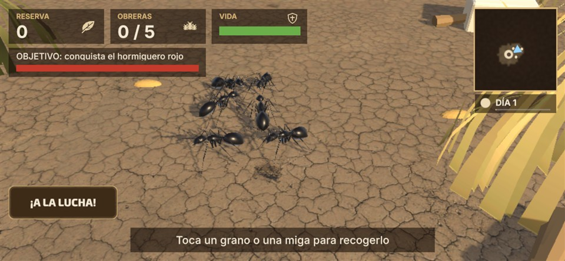

Colonia con reglas
Recolección, rastro de feromonas, crecimiento y comportamiento autónomo de obreras.
Juego de estrategia y simulación de colonias de hormigas para móvil. Combina exploración de un jardín en 3D, gestión del hormiguero, recolección, feromonas y encuentros con colonias rivales.

Captura de prototipoRecolección, rastro de feromonas, crecimiento y comportamiento autónomo de obreras.
Combate, soldados, ciclo día/noche, araña y ampliación del nido excavando.
Unity 6, URP, C#, escenas y pruebas automatizadas; todavía sin lanzamiento comercial.
Estado real: prototipo jugable y compilación web de prueba. Falta validar rendimiento y controles en iPhone, equilibrio de juego y publicación en tiendas. Desarrollo asistido por IA bajo dirección y supervisión del autor.
Un proyecto en evolución, con decisiones de diseño y pruebas documentadas. El trabajo se presenta por su estado real, no como un producto ya comercializado.
Volver al portfolio ↗